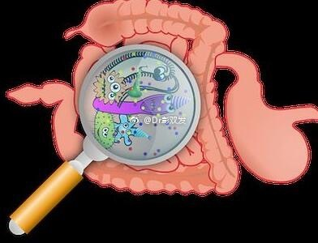

//@Dr彭双发:世间最完美的护肤品是自己的汗与皮脂自动乳化、经过表皮微生物组“发酵”生成的弱酸性皮脂膜。 三八节给每一位深爱妻子的老公發一把菜刀：1做菜；2剁手。拿走不谢！@Ada李力 @三三医生 @皮肤医生简丹 @袁超医生 /@优德健康:#3.8女王节# @Dr彭双发:#不是红颜易老,是你流汗太少# 【不是红颜易老，是你流汗太少】管住嘴迈开腿，可以帮你击退“红颜杀手”——痤疮、玫瑰痤疮、色斑、皮肤松弛、代谢综合征、多囊卵巢综合征………网页链接 深圳·深圳优德医美 